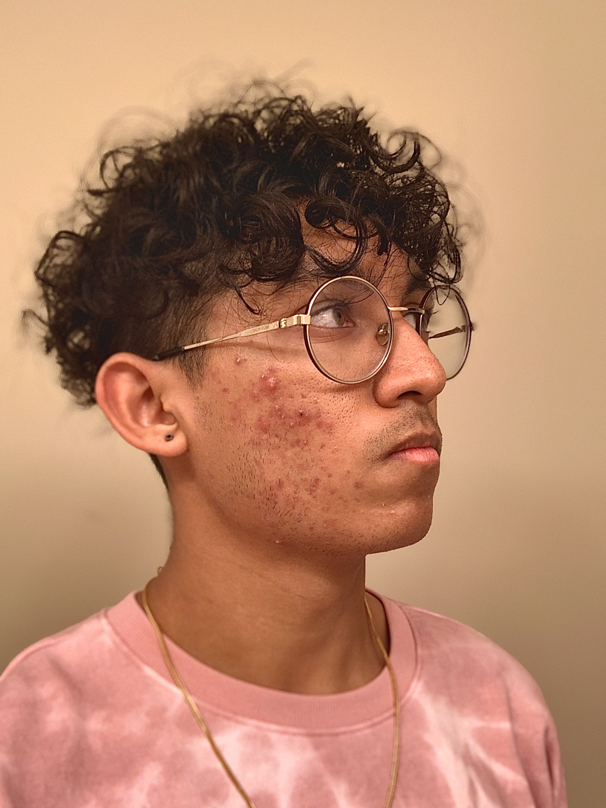
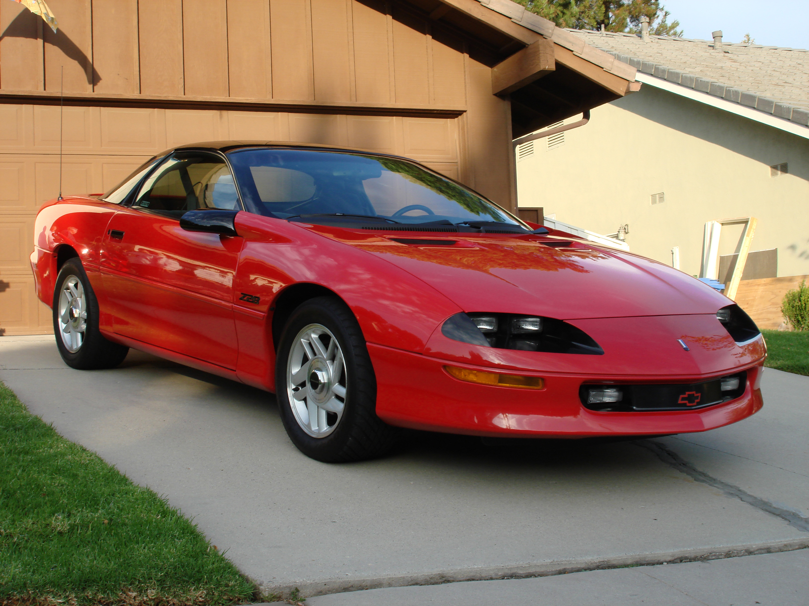
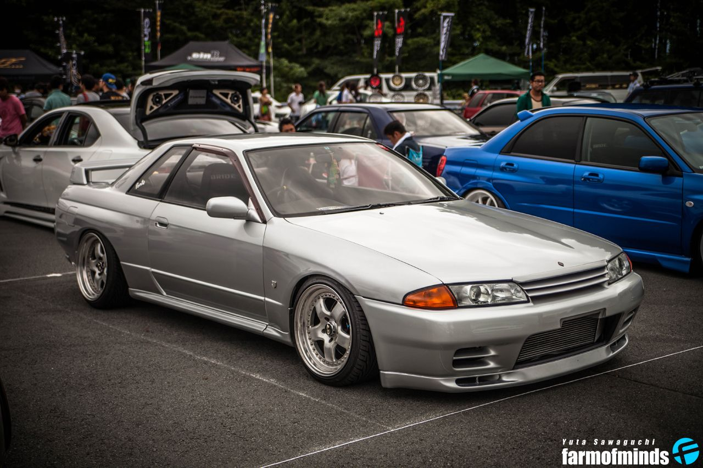
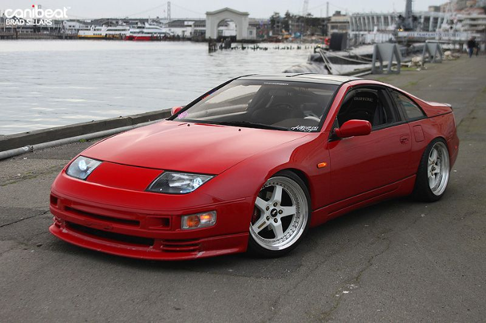
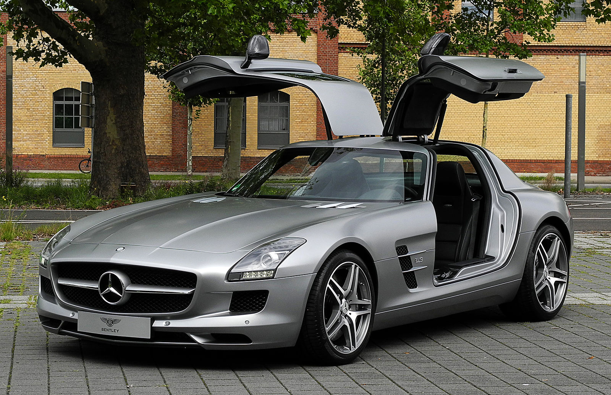

This is a webpage all about me. My likes, dislikes, hopes, dreams, and favorite things.
I am a highschool senior taking Adobe Digital Design. This is my first real HTML website and I'm excited to be coding again and this time, creating something with it!
In my freetime, I like to play tennis, play videogames, watch anime, and drive/work on my car (to be honest anything to do with cars is fascinating to me). I'm also an avid movie watcher, comic fan, and I'm currently trying to learn Japanese and relearn how to play my guitar.
"Oh? You're approaching me?"
- Dio Brando, Jojo's Bizarre Adventure
| Favorite American Car | Chevrolet Camaro (I own a Fourth Gen: it was my dream car for many years) |  |
|---|---|---|
| Favorite JDM Car(s) | Nissan Skyline R32 GTR, Nissan 300zx Turbo (first is a realistic dream car, and second is one I'll probably buy as a second car) |  |
| Favorite German Car | Mercedes-Benz SLS AMG (these cars are too cool, and the gullwings are the cherry on top) |  |
| Favorite Games (PS4) | Spider-Man PS4, Ghost of Tsushima, the Uncharted Series | |
| Favorite Drink | Water (nothing hits crisper than H2O) | |
| Favorite Fruit | Mango | |
Email: vtfakeemailha!@hehemail.com
Phone: 123-567-911